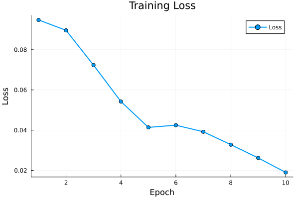
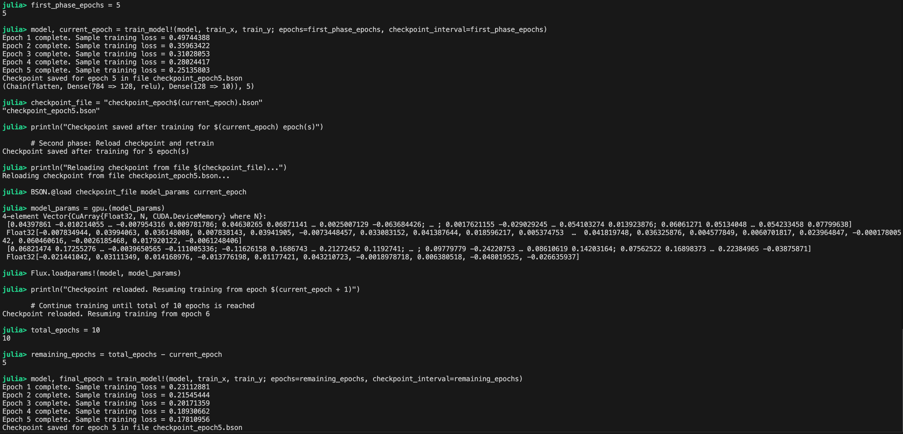

# using Pkg
# Pkg.add("Flux")
# Pkg.add("MLDatasets") Introduction
Deep learning is a specialized subset of machine learning that uses multi-layered neural networks (often called deep neural networks) to learn complex patterns from data. In this tutorial, we’ll introduce Flux.jl, a pure-Julia library for machine learning models (including deep neural networks), and walk through building, training, and evaluating a neural network on the classic MNIST dataset of handwritten digits.
This tutorial covers:
Environment setup and data preprocessing
Building a simple neural network model
Training the model with mini-batching
Evaluating the model and plotting results
Advanced topics: checkpointing and mixed-precision training with an FP32 master copy
Standard ML workflow:
Data Collection & Preparation: MNIST provides images of handwritten digits along with their true labels (0 through 9)
Model Building: Neural network (a chain of layers) that will take inputs (images) and produce outputs (predicted labels)
Training: Forward Pass (using a loss function), and adjust the model’s parameters (weights) to reduce this error (iterative gradient descent)
Evaluation: Test set Evaluation on model’s performance (e.g., accuracy in classification)
What is Flux.jl
Flux.jl is an open-source machine learning library written solely in Julia. It provides a flexible and maths-friendly framework for building neural networks (e.g. feed-forward networks, convolutional networks, recurrent networks, etc.) in just a few lines of code, very similar to PyTorch. It integrates smoothly with the Julia language and has noticeable features such as automatic differentiation (AD) and CUDA support.
Some key characteristics of Flux.jl:
Easy Model Definition: You can define models like writing simple Julia functions. Flux provides layers like
Dense(fully connected layer),Conv(convolutional layer), activation functions (likerelu,sigmoid), and utilities to chain them together. (more example to come)Gradients and Training: Flux handles backpropagation (gradient calculation) for you via Julia’s automatic differentiation (AD) system. You just define a loss function, and Flux can compute gradients and update parameters using optimizers (like SGD, Adam).
Integration with Julia Ecosystem: Rather than being a monolithic framework, Flux works with other Julia packages. For example, it uses MLDatasets.jl for easy data loading (which we’ll use for MNIST) and allows using any Julia array type (CPU or GPU arrays, etc.) seamlessly
Example
Environment Set Up
We’ll use Flux for deep learning, CUDA for GPU support, and Plots for visualization. We’ll also use the MLDatasets which contains common datasets including MNIST
using Flux
using MLDatasets
# MNIST dataset
train_x, train_y = MLDatasets.MNIST.traindata();
test_x, test_y = MLDatasets.MNIST.testdata();
println(size(train_x)) # Expect (28, 28, 60000) - 60k images of 28x28 pixels
println(size(train_y)) # Expect (60000,) - 60k labels corresponding to the images
println(size(test_x)) # Expect (28, 28, 10000) - 10k test images
println(size(test_y)) # Expect (10000,) - 10k test labels
Explanation: The MNIST dataset consists of grayscale images of handwritten digits 0 through 9, each image being 28x28 pixels. The code above loads train_x and train_y as the training set images and labels, and similarly test_x and test_y for the test set. According to the dataset, there are 60,000 training examples and 10,000 test examples, which matches the printed shapes:
train_xis a 28×28×60000 array (the third dimension indexes the images).train_yis a vector of length 60000, containing the digit labels (0–9) for each training image.The test set shapes are 28×28×10000 for images and 10000 for labels.
Preprocessing step: in this case, train_x and test_x might be of type N0f8 (normalized 8-bit fixed-point) or UInt8 representing pixel intensities. We’ll convert them to Float32 for Flux, and also normalize pixel values to the 0-1 range if they aren’t already. (Often, MLDatasets provides the images already as Float32 in [0,1].)
One-Hot Encoding: Tune labels for multi-class classification. It means representing each label as a vector of length 10 (for digits 0-9) that has a 1 in the position corresponding to the digit and 0 in all other positions. For example, label 3 becomes [0,0,0,1,0,0,0,0,0,0]. Flux provides a convenient onehotbatch function to do this conversion for a batch of labels.
train_x = Float32.(train_x);
test_x = Float32.(test_x);
# One-hot encode
train_y_onehot = Flux.onehotbatch(train_y, 0:9); # 10×60000 matrix of one-hot columns
test_y_onehot = Flux.onehotbatch(test_y, 0:9); # 10×10000 one-hot encoded labels for test
println(train_y[1], " -> ", vec(train_y_onehot[:,1])) 
Explanation: We used Float32.(train_x) to broadcast conversion of each element to Float32.
If the original pixel values were 0-255, converting to Float32 will yield 0.0-255.0; if they were N0f8 (0.0-1.0 in an 8-bit format), the conversion yields 0.0-1.0 floats. In either case, a neural network can work with these scaled inputs (though if it were 0-255, we might explicitly divide by 255 to scale to [0,1]). This may be an issue when coming into lower precision such as Float16 as we will discuss later.
One-hot encoding is done via Flux.onehotbatch(labels, 0:9), which produces a 10-row matrix where each column is a one-hot representation of the corresponding label
Move to GPU
using CUDA
if CUDA.has_cuda()
println("CUDA is available! Using GPU for computations.")
device(x) = cu(x) # GPU
else
println("CUDA not available. Using CPU.")
device(x) = x # CPU
endtrain_x_gpu = device(train_x);
train_y_gpu = device(train_y);
test_x_gpu = device(test_x);
test_y_gpu = device(test_y);
train_y_onehot_gpu = device(train_y_onehot);
test_y_onehot_gpu = device(test_y_onehot);As a side note:
cu(x) is a generic, higher-level conversion function that “adapts” its input to a GPU array. If x is already a CuArray, it simply returns it unchanged. And if x is a CPU array, it’s equivalent to calling CuArray(x)
CuArray(x) explicit construct GPU arrays which make it transparent for speed / memory demostration.
Building a Neural Network Model with Flux
Flux makes it easy to define neural network models —similar in spirit to the custom nn.Module example in PyTorch - using the Chain function, which combines layers (and functions) sequentially. A neural network can be thought of as a chain of layers, where each layer transforms its input to some output; these outputs become inputs to the next layer. In Flux, Chain takes a list of layer constructors (or functions) and creates a callable model.
For our MNIST classifier, we’ll build a simple feed-forward neural network (multi-layer perceptron) with one hidden layer:
Input layer: 28×28 pixels per image, which we will flatten into a 784-dimensional vector (this can be done with
Flux.flattenas a layer in the chain)Hidden layer: a fully connected dense layer with, say, 128 neurons and a ReLU activation. This layer will take the 784-dim input and produce 128 outputs.
Output layer: a dense layer with 10 neurons (one for each digit class) producing the raw scores for each class. We’ll later apply a softmax or appropriate loss to these scores to get class probabilities.
using Flux: Dense, Chain, relu, flatten
model = Chain(
flatten, # flatten 28x28 input images into 784-element vectors
Dense(28*28, 128, relu), # hidden layer: 784 -> 128, with ReLU activation
Dense(128, 10) # output layer: 128 -> 10 (raw scores for 10 digits)
)
model_gpu = device(model)We used Chain to stack three components: flatten (to convert 2D image to 1D vector), a Dense layer with 128 neurons and ReLU, and another Dense layer with 10 outputs. The Dense(input_dim, output_dim, activation) constructor creates a fully connected layer (it automatically initializes weights and biases). Here, the first Dense layer takes 784 inputs and gives 128 outputs with ReLU activation applied, and the second Dense layer takes 128 inputs and gives 10 outputs. We did not specify an activation for the output layer; in classification tasks, it’s common to apply a softmax at the end to interpret outputs as probabilities, but we’ll handle that in the loss function for numerical stability instead of as a separate layer. (Alternatively, one could add softmax as the final layer in the Chain, but then one should use a corresponding loss that expects probabilities.)
Also, note that each layer like Dense is an ordinary struct, which encapsulates some arrays of parameters (and possibly other state, as for BatchNorm)
julia> typeof(Dense(28*28, 128, relu))
Dense{typeof(relu), Matrix{Float32}, Vector{Float32}}indicates that the layer uses the relu activation function, with a weight matrix of type Matrix{Float32} and a bias vector of type Vector{Float32}
As discussed in Notes 8 GPUs, we could write custom CUDA kernels in Julia to accelerate operations in training loop. Given that most operations (matrix multiples, convolutions, etc.) are highly optimized using libraries like cuDNN already, one common target is the activation function. A simple demo in Appendix.
At this point, model is a Flux model that we can call like a function. For example, model(train_x[:,:,1:5]) would output predictions for the first 5 images (though they would be untrained, random predictions initially). We haven’t trained the model yet, so if we tried to predict, the outputs would be basically random relative to the true labels. Training will adjust the weights to make these predictions meaningful.
GPU & CPU Tensor
@time cpu_predictions = model(test_x);
# 2.668480 seconds (2.98 M allocations: 211.474 MiB, 79.97% compilation time)
# 0.610637 seconds (10 allocations: 10.529 MiB)@time gpu_predictions = model_gpu(test_x_gpu);
# 3.151836 seconds (2.50 M allocations: 166.681 MiB, 2.00% gc time, 89.35% compilation time)
# 0.000341 seconds (298 allocations: 6.703 KiB)Performance Boost with Lower Precision
# Matrix multiplication with Float64
A64 = rand(10000, 10000);
B64 = rand(10000, 10000);
@time C64 = A64 * B64;
# 25.654823 seconds (2 allocations: 762.939 MiB, 0.27% gc time)
# Matrix multiplication with Float32
A32 = rand(Float32, 10000, 10000);
B32 = rand(Float32, 10000, 10000);
@time C32 = A32 * B32;
# 13.297140 seconds (2 allocations: 381.470 MiB)Gradient
Flux leverages Zygote for source-to-source automatic differentiation (AD), which means that the gradient(f, x) connects to Julia’s compiler to transform operations in f to produce code for computing ∂f/∂x. Whether you work with implicit global parameters or pass them explicitly, Flux uses AD to compute gradients efficiently.
Example 1: Implicit Parameters with Global Variables
Defines a polynomial using a closure over the global vector θ. When we call gradient(poly, 5.0), Flux computes the derivative of poly at 5.
using Flux
θ = [10.0, 1.0, 0.1]; # Global parameters for a quadratic polynomial
poly(x) = θ[1] + θ[2]*x + θ[3]*x^2;
# Gradient of poly with respect to input x at x = 5
grad_input = gradient(poly, 5.0); # d(poly)/dx.
println("Gradient with respect to input: ", grad_input[1])
# d/dx (10 + x + 0.1*x^2) = 1 + 0.2*x, and at x=5, 1+1=2)Gradient with respect to input: 2.0Example 2: Explicit Parameter Passing
Defines poly2 where parameters are explicitly passed. This allows Flux to return a tuple with gradients with respect to both the input and the parameters.
# Alternative version that takes parameters explicitly.
poly2(x, θ2) = evalpoly(x, θ2); # built-in, from Base.Math
# Gradients with respect to both input and parameters.
grad_input_param = gradient(poly2, 5.0, θ);
println("Gradient with respect to x: ", grad_input_param[1])
println("Gradient with respect to parameters: ", grad_input_param[2])
# Grad_input_param[2] is a vector of derivatives [∂poly2/∂θ[1], ∂poly2/∂θ[2], ∂poly2/∂θ[3]]Gradient with respect to input: 2.0
Gradient with respect to x: 2.0
Gradient with respect to parameters: [1.0, 5.0, 25.0]Gradient is also used within train! to differentiate the model.
Defining the Loss Function and Optimizer
Loss Function: For a multi-class classification problem like MNIST, a common choice of loss function is cross-entropy loss. Cross-entropy measures the difference between two probability distributions: in our case, the model’s predicted distribution over classes vs. the true distribution (which for a correct label is a one-hot vector). We will use Flux’s built-in cross-entropy implementations. Specifically, we will use Flux.Losses.logitcrossentropy, which expects the model’s raw output scores (logits) and the true one-hot vector, and internally applies the softmax and cross-entropy in a numerically stable way. This is equivalent to applying a softmax to get probabilities and then using crossentropy, but logitcrossentropy is preferred to avoid potential numerical issues.
Optimizer: We need to choose an optimization algorithm to update the model’s weights based on the gradients of the loss. A good default for neural networks is Adam (Adaptive Moment Estimation), which often converges faster than basic stochastic gradient descent. We’ll use Flux’s ADAM optimizer with a modest learning rate.
We also need to gather the model parameters into a container that the optimizer will update. Flux provides params(model) for that.
using Flux: onecold
loss_function(x, y) = Flux.Losses.logitcrossentropy(model(x), y);
opt = Flux.Optimise.ADAM(0.001); # Adam optimizer with learning rate 0.001
parameters = Flux.params(model); # Trainable parametersA quick breakdown:
loss_function(x, y)runs ourmodelon inputxand compares the output to true one-hot labelyusing logit cross-entropy. This will give a scalar loss value (or average loss over a batch).opt = ADAM(0.001)creates an Adam optimizer. (Accessed viaFlux.Optimise.ADAM– note some Flux versions you might useADAM()if properly imported. The exact namespace isn’t too important, as long as we have anoptobject.)parameters = Flux.params(model)collects all the weight and bias arrays from our model layers. Flux will use this to know what values to update during training.
Now we have all components ready for training: the model (model), the objective (loss_function), the data (train_x and train_y_onehot), and the optimizer (opt). We can proceed to train the model.
Training the Model
Training a model in Flux typically involves iterating over the dataset multiple times (epochs) and updating the model parameters to gradually reduce the loss. We have a few options for how to implement the training loop:
Use
Flux.train!, a convenience function that automates the loop over data points or batchesManually write a loop using
Flux.gradientand update the parameters (As we will see in Model Checkpointing example).Use mini-batches for efficiency (especially for large datasets) via
Flux.Data.DataLoaderto batch and shuffle data
For simplicity, we’ll use train! along with a DataLoader for mini-batching. This way, we can train in batches (say 128 images at a time) rather than one image at a time or the entire dataset at once, compromising speed and stability.
Let’s create a DataLoader for our training data and run a training loop for a certain number of epochs:
using Flux.Data: DataLoader
using Plots
# Data loader for mini-batch iteration
batch_size = 128
train_loader = DataLoader((train_x, train_y_onehot), batchsize=batch_size, shuffle=true)
train_losses = Float32[]
epochs = 5
for epoch in 1:epochs
for (x_batch, y_batch) in train_loader
Flux.train!(loss_function, parameters, [(x_batch, y_batch)], opt)
end
train_loss = loss_function(train_x[:, :, 1:1000], train_y_onehot[:, 1:1000]) # loss on a subset
push!(train_losses, train_loss)
println("Epoch $epoch complete. Sample training loss = $(train_loss).")
end
p1 = plot(train_losses,
title="Training Loss",
label="Loss",
xlabel="Epoch",
ylabel="Loss",
linewidth=2,
marker=:circle)
savefig(p1, "loss_plot.png")
Explanation: We constructed train_loader by passing a tuple (train_x, train_y_onehot) to DataLoader, with a batch size of 128 and shuffle=true to randomize order each epoch. In the training loop, for each epoch we loop over train_loader, which yields batches (x_batch, y_batch) of size 128. We then call Flux.train!(loss_function, parameters, [(x_batch, y_batch)], opt) to perform parameter updates for that batch. The train! function will compute the gradient of loss_function(x_batch, y_batch) with respect to parameters and update them using the Adam optimizer.
We print sample training loss on a subset of data after each epoch. As the epochs progress, we observe the loss decreasing, indicating that the model is learning.
Note: With 5 epochs and a batch size of 128 on 60k examples, that’s about 5 * (60000/128) ≈ 5 * 469 batches, which is quite manageable on CPU for a small network and even faster with GPU (CuArrays).
Note: Training process above is its in-place modification of the model parameters, as demonstrated by the successive execution of two training phases: an initial run with 5 epochs followed by a subsequent run with 10 epochs. Flux performs parameter updates directly on the existing parameters object, accessed via Flux.params(model).
Evaluating the Model
After training, we should assess how well the model generalizes to unseen data — in this case, the 10,000 images in our test set (which were not used for training). We’ll use the trained model to predict labels for the test images and then compute the accuracy: the fraction of images for which the predicted label matches the true label. Few ways to get predictions:
We could get the raw scores from the model and take the index of the highest score (since the highest logit corresponds to the most likely class).
Since we one-hot encoded the test labels, we can also compare one-hot predictions to the true one-hot vectors.
Flux provides a utility onecold which is the inverse of one-hot encoding — it can take the model’s probability output (or logits) and return the predicted class labels
y_pred_logits = model(test_x); # outputs (logits) for each test image
predicted_labels = onecold(y_pred_logits, 0:9); # digit (0-9)
true_labels = test_y;
accuracy = sum(predicted_labels .== true_labels) / length(true_labels);
println("Test Accuracy: ", accuracy)Here, model(test_x) produces a 10×10000 matrix of raw scores (each column corresponds to one test image). The onecold(..., 0:9) function finds the index of the largest score in each column and maps it to the corresponding label in 0:9. This gives a vector of 10000 predicted digit labels. We then compare this to the true labels and compute the proportion that are equal. The result is the accuracy (a number between 0 and 1, where 1.0 would mean 100% correct).
Model Checkpointing (Saving and Loading)
Long training runs should save model checkpoints periodically (e.g., every few epochs) to guard against crashes and to enable later analysis or fine-tuning. Rather than saving the entire model (which can lead to compatibility issues over time), a recommended approach is to save only the model’s parameters. In our example, we use the BSON format to store a CPU copy of the model’s parameters along with the current epoch. This is achieved by converting the model parameters to CPU-friendly Float32 arrays using cpu.(Flux.params(model)).
Later,to resume training or fine-tune the model, we reload the checkpoint using BSON, move the parameters back to the GPU (if available) with cu.(model_params), and then update the model with Flux.loadparams!(model, model_params).
using MLDatasets
using CUDA
using Flux
using Flux.Data: DataLoader
using Flux.Losses: logitcrossentropy
using Flux.Optimise: ADAM
using BSON
using Plots
using Flux: Dense, Chain, relu, flatten, gpu, fmap
# Utility: move to GPU if available
device(x) = CUDA.has_cuda() ? cu(x) : x
# Data loading and preprocessing (used in both training and reloading)
function load_data()
# Load MNIST data
train_x, train_y = MLDatasets.MNIST.traindata()
test_x, test_y = MLDatasets.MNIST.testdata()
# Convert images to Float32 and send to device (GPU if available)
train_x = device(Float32.(train_x))
test_x = device(Float32.(test_x))
# One-hot encode labels and send to device
train_y_onehot = device(Flux.onehotbatch(train_y, 0:9))
test_y_onehot = device(Flux.onehotbatch(test_y, 0:9))
return train_x, train_y_onehot, test_x, test_y_onehot
end
# Build the model and send it to the appropriate device
function build_model()
model = Chain(
flatten,
Dense(28*28, 128, relu),
Dense(128, 10)
)
return device(model)
end
# Define the loss function
loss_function(model, x, y) = logitcrossentropy(model(x), y)
# Training loop with optional checkpointing
function train_model!(model, train_x, train_y;
epochs=5, batch_size=128,
checkpoint_interval=5, checkpoint_prefix="checkpoint_epoch")
opt = ADAM(0.0001)
params = Flux.params(model)
train_loader = DataLoader((train_x, train_y), batchsize=batch_size, shuffle=true)
current_epoch = 0
for epoch in 1:epochs
for (x_batch, y_batch) in train_loader
grads = gradient(() -> loss_function(model, x_batch, y_batch), params)
Flux.Optimise.update!(opt, params, grads)
end
current_epoch += 1
# Compute a sample loss on a fixed subset
subset_x = train_x[:, :, 1:1000]
subset_y = train_y[:, 1:1000]
current_loss = loss_function(model, subset_x, subset_y)
println("Epoch $(current_epoch) complete. Sample training loss = $(current_loss)")
# Save checkpoint at the given interval or on final epoch
if (current_epoch % checkpoint_interval == 0) || (epoch == epochs)
# Save CPU version of model parameters (optimizer state is not saved)
model_params = cpu.(Flux.params(model))
filename = "$(checkpoint_prefix)$(current_epoch).bson"
BSON.@save filename model_params current_epoch
println("Checkpoint saved for epoch $(current_epoch) in file $(filename)")
end
end
return model, current_epoch
end
# Load data (common to both training and resuming)
train_x, train_y, test_x, test_y = load_data();
# Build the model
model = build_model()
# First phase: Train for 5 epochs and save checkpoint
first_phase_epochs = 5
model, current_epoch = train_model!(model, train_x, train_y; epochs=first_phase_epochs, checkpoint_interval=first_phase_epochs)
checkpoint_file = "checkpoint_epoch$(current_epoch).bson"
println("Checkpoint saved after training for $(current_epoch) epoch(s)")
# Second phase: Reload checkpoint and retrain
println("Reloading checkpoint from file $(checkpoint_file)...")
BSON.@load checkpoint_file model_params current_epoch
model_params = cu.(model_params);
Flux.loadparams!(model, model_params)
println("Checkpoint reloaded. Resuming training from epoch $(current_epoch + 1)")
# Continue training until total of 10 epochs is reached
total_epochs = 10
remaining_epochs = total_epochs - current_epoch
model, final_epoch = train_model!(model, train_x, train_y; epochs=remaining_epochs, checkpoint_interval=remaining_epochs)
println("Training complete at epoch $(current_epoch + final_epoch)")
Mixed-Precision Training (Float16 on GPU)
Modern GPUs can achieve higher throughput with lower precision (FP16/BFloat16) using tensor cores.
Flux can leverage this by training with Float16 weights and gradients (mixed precision). This reduces memory usage and can significantly speed up math-intensive models on supported GPUs.
The main idea is to perform the forward pass and gradient computations in FP16 (for speed) while maintaining an `FP32 “master copy” of the weights.
During updates, gradients are cast to FP32 so that the weight update 𝑤 = 𝑤 − 𝜂 × grad is computed in higher precision.
The Problem with Pure FP16 Training
When casting both data and model parameters entirely to FP16—especially when also normalizing inputs (e.g. dividing by 255)— risk running into severe precision issues.
FP16 only provides about 3 decimal digits of precision, and small gradient values or scaling operations can cause underflow or rounding errors that accumulate during backpropagation. resulting in NaN or InF Loss.
# Convert model parameters to FP16
to_float16(x) = x isa AbstractArray ? Float16.(x) : x
model_f16 = fmap(to_float16, model) |> gpu
# --- Mixed Precision Loss ---
loss_function(x, y) = logitcrossentropy(Float32.(model_f16(x)), Float32.(y))
# --- Optimizer and Training Setup ---
opt = ADAM(0.0001)
parameters = Flux.params(model_f16)
train_loader = DataLoader((train_x_16, train_y_onehot_16), batchsize=128, shuffle=true)
for epoch in 1:5
for (x_batch, y_batch) in train_loader
grads = gradient(() -> loss_function(x_batch, y_batch), parameters)
Flux.Optimise.update!(opt, parameters, grads)
end
# Loss monitoring
subset_x = train_x_16[:, :, :, 1:1000]
subset_y = train_y_onehot_16[:, 1:1000]
train_loss = loss_function(subset_x, subset_y)
println("Epoch $epoch complete. Sample training loss = $train_loss")
endMixed Precision with an FP32 Master Copy
- Model Initialization:
- Define your model in FP32.
- Master Copy Creation:
- Create a deep‑copy of the FP32 parameters (the “master copy”) on the GPU.
- FP16 Computation Model:
- Convert the model to FP16 (using
fmap(to_float16, ...)) for on‑device computation.
- Convert the model to FP16 (using
- Loss Calculation:
- Do the forward pass in FP16, then cast outputs (and targets) to FP32 to compute a stable loss.
- Gradient Update:
- Compute gradients w.r.t. the FP16 model, cast gradients to FP32, update the FP32 master copy using ADAM, and then sync updated FP32 weights back to the FP16 model.
Parameter Storage:
Pure FP16: All parameters remain in FP16.
Mixed Precision: A high-precision FP32 master copy is maintained alongside the FP16 computation model.
Gradient Update:
Pure FP16: Gradients update the FP16 parameters directly.
Mixed Precision: Gradients are converted to FP32 to update the FP32 master copy, then the FP16 model is synchronized with the updated master parameters.
using Flux
using Flux: Dense, Chain, relu, flatten, gpu, fmap
using Flux.Data: DataLoader
using Flux.Losses: logitcrossentropy
using MLDatasets, CUDA, Plots
using Flux.Optimise: ADAM
using BSON
train_x_gpu, train_y_onehot_gpu, test_x_gpu, test_y_onehot_gpu = load_data();
# --- Data Preparation ---
# Convert and reshape training/testing data to Float16 and normalize to [0,1].
train_x_16 = Float16.(reshape(train_x_gpu, 28, 28, 1, :));
test_x_16 = Float16.(reshape(test_x_gpu, 28, 28, 1, :));
train_y_onehot_16 = Float16.(train_y_onehot_gpu);
test_y_onehot_16 = Float16.(test_y_onehot_gpu);
# --- Model Definition (FP32) ---
model = Chain(
flatten, # Flatten the input images
Dense(28*28, 128, relu), # First dense layer with ReLU activation
Dense(128, 10) # Output layer (logits for 10 classes)
)
# --- Create Master Copy (FP32) on GPU ---
# This master copy will be updated using FP32 math.
master_params = [deepcopy(p) |> gpu for p in Flux.params(model)];
# --- Create FP16 Model for On-device Computation ---
to_float16(x) = x isa AbstractArray ? Float16.(x) : x;
model_f16 = fmap(to_float16, model) |> gpu;
# --- Mixed Precision Loss ---
# Compute forward pass in FP16 then cast outputs and targets to FP32 for loss computation.
loss_function(x, y) = logitcrossentropy(Float32.(model_f16(x)), Float32.(y))
# --- Optimizer Setup (for master FP32 parameters) ---
opt = ADAM(0.0001)
batch_size = 128
train_loader = DataLoader((train_x_16, train_y_onehot_16), batchsize=batch_size, shuffle=true)
train_losses = Float32[]
epochs = 10
for epoch in 1:epochs
for (x_batch, y_batch) in train_loader
# Compute gradients with respect to the FP16 model parameters.
gs = gradient(() -> loss_function(x_batch, y_batch), Flux.params(model_f16))
# Update each parameter: convert the gradient to FP32 and update the master copy,
# then sync the master copy back to the FP16 model.
for (p16, p32) in zip(Flux.params(model_f16), master_params)
g = gs[p16]
g32 = Float32.(g) # Convert gradient to FP32
Flux.Optimise.update!(opt, p32, g32)
p16 .= Float16.(p32) # Sync updated FP32 master to FP16 model
end
end
# Evaluate loss on a subset for monitoring.
subset_x = train_x_16[:, :, :, 1:1000]
subset_y = train_y_onehot_16[:, 1:1000]
train_loss = loss_function(subset_x, subset_y)
push!(train_losses, Float32(train_loss))
println("Epoch $epoch complete. Sample training loss = $train_loss")
endProper loss with learning FP32 Copy
| Epoch | Loss |
|---|---|
| Epoch 1 complete. | Sample training loss = 0.504 |
| Epoch 2 complete. | Sample training loss = 0.363 |
| Epoch 3 complete. | Sample training loss = 0.311 |
| Epoch 4 complete. | Sample training loss = 0.274 |
| Epoch 5 complete. | Sample training loss = 0.253 |
Unstable loss with learning Everything in FP16
| Epoch | Loss |
|---|---|
| Epoch 1 complete. | Sample training loss = NaN |
| Epoch 2 complete. | Sample training loss = NaN |
| Epoch 3 complete. | Sample training loss = NaN |
| Epoch 4 complete. | Sample training loss = NaN |
| Epoch 5 complete. | Sample training loss = NaN |
Things to consider
The GPU memory is separate from CPU memory, and transferring data from the CPU to GPU (or back) is often more costly than doing the computation on the GPU.
On the other hand, GPUs can process these lower-precision operations (FP16) faster—sometimes leveraging specialized hardware like Tensor Cores (Processing unit in A100, H100 etc) —which results in a significant speed-up.
Memory & Speed
using CUDA, BenchmarkTools
x_cpu_16 = rand(Float16, 28, 28, 1, 1000);
x_cpu_32 = rand(Float32, 28, 28, 1, 1000);
# CPU -> GPU transfer time for Float16:
@btime CUDA.@sync begin
x_gpu_16 = CuArray(x_cpu_16)
nothing
end
# 350.586 μs (10 allocations: 304 bytes)
# CPU -> GPU transfer time for Float32
@btime CUDA.@sync begin
x_gpu_32 = CuArray(x_cpu_32)
nothing
end
# 690.255 μs (10 allocations: 304 bytes)
x_gpu_16 = CuArray(x_cpu_16);
x_gpu_32 = CuArray(x_cpu_32);
# GPU -> CPU transfer time for Float16
@btime CUDA.@sync begin
out_16 = Array(x_gpu_16)
nothing
end
# 391.073 μs (8 allocations: 1.50 MiB)
# GPU -> CPU transfer time for Float32
@btime CUDA.@sync begin
out_32 = Array(x_gpu_32)
nothing
end
# 686.994 μs (8 allocations: 2.99 MiB)Tensor Core Speed Up
# Modified from Note 8: GPUs
n = 1000
x16_gpu = CUDA.randn(Float16, n, n);
y16_gpu = CUDA.randn(Float16, n, n);
x32_gpu = CUDA.randn(n, n);
y32_gpu = CUDA.randn(n, n);
function matmult(x, y)
z = x * y;
return z
end
@btime CUDA.@sync z16_gpu = matmult(x16_gpu, y16_gpu);
# 43.978 μs (50 allocations: 1.17 KiB)
@btime CUDA.@sync z32_gpu = matmult(x32_gpu, y32_gpu);
# 157.912 μs (50 allocations: 1.17 KiB)Float32 values use 4 bytes per element versus 2 bytes per element for Float16. Hence, transferring a Float32 array 2x data, resulting 2x time.
304 bytes is the overhead of CPU -> GPU transfer?
The allocation size (1.50 MiB vs. 2.99 MiB) GPU -> CPU corresponds to the actual data size in memory
Close to 4x speed up in matrix multiplication hint the contribution of tensor cores
Gradient Scaling (Optional)
In some cases, especially when the loss is very small, you might apply a loss scaling factor to prevent gradient underflow in FP16.
- Add a loss scaling factor which multiply the loss before backpropagation
- Modify loss function to return both scaled loss (backpropagation) and unscaled loss (monitoring)
- Updatethe master model weight in unscaled FP32 precision and copy it back to FP16
# --- Mixed Precision Loss ---
# Compute forward pass in FP16 then cast outputs and targets to FP32 for loss computation.
loss_function(x, y) = logitcrossentropy(Float32.(model_f16(x)), Float32.(y))Change to
# --- Mixed Precision Loss with Gradient Scaling ---
loss_scale = Float32(128.0) # loss scaling factor
# Compute forward pass in FP16, apply loss scaling, and cast to FP32 for stable loss computation
function loss_function(x, y)
outputs = model_f16(x) # Forward pass in FP16
loss = logitcrossentropy(Float32.(outputs), Float32.(y)) # FP32 loss computation
scaled_loss = loss * loss_scale # Scale loss
return scaled_loss, loss # Return both scaled and unscaled loss
endAnd
for epoch in 1:epochs
for (x_batch, y_batch) in train_loader
# Gradients w.r.t FP16 model Parms.
gs = gradient(() -> loss_function(x_batch, y_batch), Flux.params(model_f16))
for (p16, p32) in zip(Flux.params(model_f16), master_params)
g = gs[p16]
g32 = Float32.(g) # Convert gradient to FP32
Flux.Optimise.update!(opt, p32, g32)
p16 .= Float16.(p32) # Sync updated FP32 master to FP16 model
end
endChange to
for epoch in 1:epochs
for (x_batch, y_batch) in train_loader
# Use the scaled loss for backpropagation
gs = gradient(Flux.params(model_f16)) do
scaled_loss, _ = loss_function(x_batch, y_batch)
return scaled_loss
end
for (p16, p32) in zip(Flux.params(model_f16), master_params)
g = gs[p16]
g32 = Float32.(g) # Convert gradient to FP32
g32 ./= loss_scale # Unscale the gradient
Flux.Optimise.update!(opt, p32, g32) # Sync updated FP32 master (unscaled gradient)
p16 .= Float16.(p32)
end
endReferences
Comparison Between Flux.jl and PyTorch
| Feature | Flux (Julia) | PyTorch (Python) |
|---|---|---|
| Language | Pure Julia, JIT compiled | Python, with C++ backend |
| GPU Support | Native via CUDA.jl | Native via CUDA |
| Ease of Use | Mathematical notation, hackable, and seamless integration with custom code | Flexible with extensive documentation and plug-and-play training loops |
| Ecosystem | Growing; integrates with SciML and specialized libraries (e.g., DiffEqFlux) | Mature with a large community and extensive model/tool libraries |
| Performance | High performance after JIT warm-up; may incur overhead on many small ops | Highly optimized with fused kernels and efficient memory management |
Appendix
GPU Kernels for Activation Function
# Adpated from Note 8: GPUs
using CUDA, BenchmarkTools
using Flux: flatten
# Custom Kernel ReLU Activation
function relu_kernel!(x)
i = (blockIdx().x - 1) * blockDim().x + threadIdx().x
if i <= length(x)
x[i] = x[i] > 0f0 ? x[i] : 0f0
end
return
end
function relu_activation!(x) # Helper function
n = length(x)
threads = min(n, 1024)
blocks = cld(n, threads)
@cuda threads=threads blocks=blocks relu_kernel!(x)
return
end
# Baseline: Broadcasting-based ReLU
function relu_builtin(x)
return max.(x, 0f0)
end
x = cu(randn(Float32, 28, 28, 1, 128));
# Custom Kernel
@btime CUDA.@sync begin
relu_activation!(x)
nothing
end
# 14.538 μs (18 allocations: 560 bytes)
# Baseline
@btime CUDA.@sync begin
y_builtin = relu_builtin($x)
nothing
end
# 26.857 μs (70 allocations: 1.72 KiB)using CUDA, BenchmarkTools, Flux, MLDatasets, BSON, Plots, Zygote
# ---------------------------------------------------------------------
# Custom Kernel ReLU Activation (in-place version for GPU arrays)
function simple_relu_kernel!(x)
i = (blockIdx().x - 1) * blockDim().x + threadIdx().x
if i <= length(x)
if x[i] < 0f0
x[i] = 0f0
end
end
return
end
function simple_relu_activation!(x)
n = length(x)
threads = min(n, 1024)
blocks = cld(n, threads)
@cuda threads=threads blocks=blocks simple_relu_kernel!(x)
return
end
# ---------------------------------------------------------------------
# Custom ReLU function that copies the input (to keep AD safe) and applies the kernel
function custom_relu(x)
if x isa CUDA.CuArray
y = similar(x)
copy!(y, x)
simple_relu_activation!(y)
return y
else
@info "Using CPU-based ReLU"
return max.(x, 0f0)
end
end
# Define a custom adjoint for custom_relu so Zygote doesn't try to differentiate through our GPU call.
Zygote.@adjoint function custom_relu(x)
y = custom_relu(x)
function pullback(Δ)
# The derivative of ReLU is 1 for x > 0, else 0.
return (Δ .* (x .> 0f0),)
end
return y, pullback
end
# ---------------------------------------------------------------------
# Define a custom layer that applies our custom_relu
struct CustomReLULayer
end
(c::CustomReLULayer)(x) = custom_relu(x)
# ---------------------------------------------------------------------
# Utility: move data to GPU if available
device(x) = CUDA.has_cuda() ? cu(x) : x
# Data loading and preprocessing
function load_data()
# Load MNIST data
train_x, train_y = MLDatasets.MNIST.traindata()
test_x, test_y = MLDatasets.MNIST.testdata()
# Convert images to Float32 and send to device (GPU if available)
train_x = device(Float32.(train_x))
test_x = device(Float32.(test_x))
# One-hot encode labels and send to device
train_y_onehot = device(Flux.onehotbatch(train_y, 0:9))
test_y_onehot = device(Flux.onehotbatch(test_y, 0:9))
return train_x, train_y_onehot, test_x, test_y_onehot
end
# Build the model using the custom ReLU layer
function build_model()
model = Chain(
Flux.flatten,
Dense(28*28, 128), # no activation here
CustomReLULayer(), # apply our custom activation as a separate layer
Dense(128, 10)
)
return device(model)
end
# ---------------------------------------------------------------------
# Define the loss function
loss_function(model, x, y) = Flux.Losses.logitcrossentropy(model(x), y)
# Training loop with optional checkpointing
function train_model!(model, train_x, train_y;
epochs=5, batch_size=128,
checkpoint_interval=5, checkpoint_prefix="checkpoint_epoch")
opt = Flux.Optimise.ADAM(0.0001)
params = Flux.params(model)
train_loader = Flux.Data.DataLoader((train_x, train_y), batchsize=batch_size, shuffle=true)
current_epoch = 0
for epoch in 1:epochs
for (x_batch, y_batch) in train_loader
grads = Flux.gradient(() -> loss_function(model, x_batch, y_batch), params)
Flux.Optimise.update!(opt, params, grads)
end
current_epoch += 1
# Compute a sample loss on a fixed subset
subset_x = train_x[:, :, 1:1000]
subset_y = train_y[:, 1:1000]
current_loss = loss_function(model, subset_x, subset_y)
println("Epoch $(current_epoch) complete. Sample training loss = $(current_loss)")
# Save checkpoint at the given interval or on final epoch
if (current_epoch % checkpoint_interval == 0) || (epoch == epochs)
model_params = cpu.(Flux.params(model))
filename = "$(checkpoint_prefix)$(current_epoch).bson"
BSON.@save filename model_params current_epoch
println("Checkpoint saved for epoch $(current_epoch) in file $(filename)")
end
end
return model, current_epoch
end
# ---------------------------------------------------------------------
# Main training workflow
train_x, train_y, test_x, test_y = load_data();
model = build_model()
# First phase: Train for 5 epochs and save checkpoint
first_phase_epochs = 5
model, current_epoch = train_model!(model, train_x, train_y; epochs=first_phase_epochs, checkpoint_interval=first_phase_epochs)
checkpoint_file = "checkpoint_epoch$(current_epoch).bson"
println("Checkpoint saved after training for $(current_epoch) epoch(s)")
# Second phase: Reload checkpoint and retrain
println("Reloading checkpoint from file $(checkpoint_file)...")
BSON.@load checkpoint_file model_params current_epoch
model_params = cu.(model_params)
Flux.loadparams!(model, model_params)
println("Checkpoint reloaded. Resuming training from epoch $(current_epoch + 1)")
# Continue training until a total of 10 epochs is reached
total_epochs = 10
remaining_epochs = total_epochs - current_epoch
model, final_epoch = train_model!(model, train_x, train_y; epochs=remaining_epochs, checkpoint_interval=remaining_epochs)
println("Training complete at epoch $(current_epoch + final_epoch)")